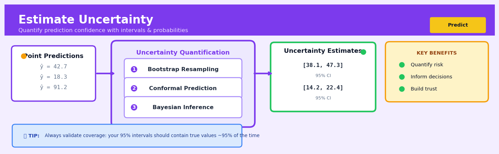

Estimate Uncertainty#


The biggest mistake I see teams make is treating uncertainty estimates as a nice-to-have metric instead of a core deliverable. If you're deploying a model in production without quantifying its uncertainty, you're essentially asking stakeholders to make high-stakes decisions with incomplete information. Always validate that your confidence intervals actually achieve their stated coverage on held-out data before shipping, because miscalibrated uncertainty is often worse than no uncertainty at all.
The 60-Second Version#
What it does: Estimate Uncertainty tells you not just what will happen, but how confident you should be in that prediction.
When to use it: Use it whenever the cost of being wrong varies—when you need to know if a prediction is rock-solid or a rough guess before making decisions.
What you get back: You receive a range (like “sales will be 80–120 units” instead of “100 units”) that lets you plan for best and worst cases, not just the middle.
At a Glance
Difficulty |
Moderate |
Typical runtime |
Seconds to minutes on 100K rows |
What you bring |
A trained model and data where you need predictions |
What you get |
Prediction intervals, confidence scores, or probability distributions |
Heuristix bucket |
Predict — Machine Learning & Forecasting |
A prediction without uncertainty is a number without context—you need both to decide whether to trust it enough to act.
Learning Objectives#
After reading this chapter, a business user will be able to:
Identify situations where a single prediction number is insufficient and request prediction intervals instead—such as when planning inventory buffers, setting risk thresholds, or communicating forecast reliability to executives.
Interpret prediction intervals and confidence levels in plain language, explaining to stakeholders what “90% confidence” actually means and why wider intervals indicate higher uncertainty rather than model failure.
Decide whether to act on a prediction by comparing the prediction interval width to your decision tolerance—for example, proceeding with a product launch only when the lower bound of predicted demand exceeds your break-even point.
After reading this chapter, a data scientist will be able to:
Implement conformal prediction, quantile regression, or Bayesian credible intervals on regression and classification tasks, correctly handling calibration data splits and ensuring valid coverage guarantees.
Tune the confidence level and choose between different uncertainty quantification methods by weighing the trade-offs between computational cost, coverage guarantees, interval width, and adaptivity to local prediction difficulty.
Validate uncertainty estimates by checking calibration curves, coverage rates across subgroups, and interval sharpness, then diagnose common failures like overconfident intervals on out-of-distribution data or miscalibration from distribution shift.
Overview#
Estimate Uncertainty refers to a family of techniques that quantify the confidence or reliability of predictions made by machine learning models, rather than producing only point estimates. These methods produce prediction intervals, confidence bands, or full predictive distributions that communicate how much we should trust a given prediction. Uncertainty estimation belongs to the broader field of probabilistic machine learning and predictive inference, drawing on both frequentist and Bayesian statistical traditions.
When to Use This#
High-stakes decision making: When incorrect predictions carry significant financial, safety, or regulatory consequences (e.g., medical diagnosis, credit decisions, infrastructure maintenance), uncertainty estimates help decision-makers understand risk exposure.
Resource allocation under scarcity: When you must decide how to allocate limited resources (budget, inventory, personnel) and need to know the realistic range of outcomes, not just the expected value.
Anomaly and outlier detection: When predictions fall outside the model’s reliable operating range, high uncertainty signals that the input may be anomalous or that the model is extrapolating beyond its training distribution.
Model selection and comparison: When comparing multiple models, uncertainty-aware metrics (proper scoring rules, calibration diagnostics) provide richer information than point-estimate accuracy alone.
Sequential decision problems: When decisions are made over time and learning continues (active learning, Bayesian optimisation, reinforcement learning), uncertainty guides exploration-exploitation trade-offs.
Communicating predictions to stakeholders: When presenting forecasts to non-technical audiences, prediction intervals are often more interpretable and actionable than point estimates with error metrics.
Regulatory and audit requirements: When external compliance demands that risk or uncertainty be quantified and documented (e.g., banking stress tests, actuarial reserving).
DO NOT use when: The downstream decision is insensitive to prediction uncertainty — for example, a simple binary classification where threshold tuning and calibration suffice, or when computational budget is extremely constrained and uncertainty adds no actionable value.
DO NOT use when: The model is deployed in a context where uncertainty cannot be acted upon — if the business process cannot accommodate variable confidence, the additional complexity may not be justified.
DO NOT use when: Ground truth is available immediately after prediction — in such cases, rapid feedback loops may render pre-decision uncertainty estimates unnecessary.
Questions This Answers#
Risk and Decision-Making#
Can we trust this revenue forecast enough to commit to hiring 50 new people next quarter?
How confident are we that this customer will actually churn, or is the model just guessing?
If we launch in this new market, what’s the range of outcomes we should actually plan for — best case and worst case?
Should we act on this fraud alert immediately, or is there a good chance it’s a false positive?
Which sales forecasts are reliable enough to base inventory orders on, and which ones need human review?
Is this predicted demand spike real enough to justify overtime costs, or should we wait and see?
Resource Allocation and Planning#
We have 10 predicted equipment failures next month — which ones should our maintenance team prioritize first?
How much safety stock do we actually need given the uncertainty in our demand predictions?
Can we confidently tell the board we’ll hit $10M in Q4, or do we need to give them a range?
Which customer segments have the most predictable lifetime value for targeting our marketing budget?
Are we more certain about our 30-day forecast or our 90-day forecast, and how should that change our planning?
Model Performance and Trust#
Why is the model so confident about some predictions but not others — what’s different about those cases?
Has our model gotten less reliable over the past three months, or are we just seeing normal variation?
When the model says 70% probability, does that actually mean 70% in practice, or is it miscalibrated?
How It Works#
Imagine you’re a doctor predicting a patient’s recovery time from surgery. You could say “you’ll be back to normal in 14 days,” but that’s dangerously precise. A better answer is “most likely 14 days, but I’m quite confident it will be between 10 and 21 days.” The first answer gives false confidence; the second acknowledges that recovery varies based on age, health, and factors we can’t fully predict. Estimate Uncertainty transforms blunt predictions into honest ranges, telling you not just what will happen, but how sure the model is about it.
TRADITIONAL PREDICTION WITH UNCERTAINTY ESTIMATION
Input Input
↓ ↓
┌─────────┐ ┌─────────┐
│ Model │ │ Model │
└─────────┘ └─────────┘
↓ ↓
Single Distribution of
Point Possible Outcomes
│ │
$47K ┌─────────┴─────────┐
(salary │ │
prediction) Low: $41K Most likely: $47K High: $53K
│ (median) │
└───────────┬───────────────┘
↓
90% Confidence Interval
"I'm 90% sure the true
value falls in this range"
Step 1: Train the base model
Start by building your prediction model normally—whether that’s a neural network, decision tree, or regression model. This model learns patterns from historical data, like predicting salaries from education and experience. So far, nothing new.
Step 2: Identify sources of uncertainty
The model examines where doubt creeps in. There’s uncertainty in the data itself (is this training data representative?), uncertainty in the model structure (did we pick the right features?), and randomness in what we’re predicting (two identical people might still earn different salaries). Different techniques focus on different sources.
Step 3: Generate multiple predictions
Instead of running the model once, the technique creates many predictions for the same input. Some methods do this by training multiple models on slightly different data samples. Others simulate different model parameters. Bayesian approaches maintain a distribution of possible models. You might generate 100 or 1,000 predictions for a single case.
Step 4: Analyze the spread
Look at how those predictions vary. If all 100 predictions cluster tightly around 47,000 dollars (ranging only from 46,500 to 47,500), the model is confident. If they’re scattered wildly from 30,000 to 70,000 dollars, the model is telling you it doesn’t really know. The width of this spread becomes your uncertainty measure.
Step 5: Report the confidence interval
Convert that spread into an actionable range. A 90% confidence interval means “90% of my predictions fell within this range, so I’m 90% confident the true value is here.” You can adjust how conservative you want to be—95% intervals are wider but safer, 50% intervals are narrower but riskier.
The key insight: Models that acknowledge what they don’t know are more trustworthy than models that pretend perfect certainty, because uncertainty quantification separates confident predictions (where the model has seen plenty of similar cases) from guesses (where it’s extrapolating into unfamiliar territory).
The Intuition#
Consider a weather forecaster predicting tomorrow’s temperature. A naive forecast might say “tomorrow will be 22°C.” A more useful forecast says “tomorrow will be between 19°C and 25°C with 90% confidence.” The second statement acknowledges that the forecaster does not have perfect knowledge — there is inherent randomness in the atmosphere and limitations in measurement and modelling. This humility, when quantified precisely, becomes actionable: a farmer deciding whether to protect crops from frost cares far more about the lower bound of the prediction interval than the point estimate.
Uncertainty in predictions arises from two fundamentally different sources. Aleatoric uncertainty (from the Latin alea, meaning dice) is the irreducible randomness inherent in the data-generating process itself. No matter how perfect our model, two customers with identical observed features may behave differently — one defaults on a loan, the other does not. This uncertainty cannot be eliminated by collecting more data; it reflects the stochastic nature of reality. Epistemic uncertainty (from the Greek episteme, meaning knowledge) arises from our ignorance — limitations in our model’s structure, finite training data, or incomplete feature information. Unlike aleatoric uncertainty, epistemic uncertainty can be reduced by gathering more data, improving the model, or expanding the feature set.
The practical value of distinguishing these sources is substantial. High epistemic uncertainty suggests we should collect more data or be cautious about trusting the prediction. High aleatoric uncertainty tells us that even with a perfect model, outcomes will vary — and our business processes should accommodate this variability. Methods like ensemble techniques, Bayesian neural networks, and conformal prediction offer different ways to estimate one or both types of uncertainty, and understanding their assumptions is critical to interpreting their outputs correctly.
The Mathematics#
Problem Setup and Notation#
Let \(\mathcal{D} = \{(x_i, y_i)\}_{i=1}^{n}\) denote a training dataset where \(x_i \in \mathcal{X} \subseteq \mathbb{R}^d\) is a \(d\)-dimensional feature vector and \(y_i \in \mathcal{Y}\) is the target variable. For regression, \(\mathcal{Y} = \mathbb{R}\); for classification, \(\mathcal{Y} = \{1, \ldots, K\}\).
A predictive model \(f_\theta: \mathcal{X} \to \mathcal{Y}\) is parameterised by \(\theta \in \Theta\). The goal of uncertainty estimation is to characterise the distribution of \(Y | X = x\) rather than merely its expectation \(\mathbb{E}[Y | X = x]\).
Prediction Intervals: Frequentist Approach#
For a new observation \(x^*\), a \((1-\alpha)\) prediction interval \([\hat{L}(x^*), \hat{U}(x^*)]\) satisfies:
where the probability is taken over both the randomness in \(Y^*\) and (in some formulations) the training data.
Under a standard linear regression model \(Y = X\beta + \varepsilon\) with \(\varepsilon \sim \mathcal{N}(0, \sigma^2)\), the prediction interval for a new point \(x^*\) is:
where \(\hat{y}^* = x^{*\top}\hat{\beta}\), \(\hat{\sigma}^2 = \frac{1}{n-p}\sum_{i=1}^{n}(y_i - \hat{y}_i)^2\) is the residual variance estimate, \(p\) is the number of parameters, and \(t_{n-p, 1-\alpha/2}\) is the appropriate quantile of the \(t\)-distribution.
The term \(1\) inside the square root accounts for aleatoric uncertainty (the variance of \(\varepsilon\)), while \(x^{*\top}(X^\top X)^{-1}x^*\) captures epistemic uncertainty (uncertainty in \(\hat{\beta}\)).
Bayesian Predictive Uncertainty#
In the Bayesian framework, we place a prior \(p(\theta)\) over model parameters and update to the posterior after observing data:
The predictive distribution for a new point integrates over parameter uncertainty:
This integral is typically intractable and must be approximated via:
Markov Chain Monte Carlo (MCMC): Sample \(\theta^{(1)}, \ldots, \theta^{(M)} \sim p(\theta | \mathcal{D})\) and approximate the predictive distribution as a mixture.
Variational Inference: Approximate \(p(\theta | \mathcal{D})\) with a tractable family \(q_\phi(\theta)\) by minimising the Kullback-Leibler divergence.
For a Bayesian linear regression with conjugate priors, the predictive distribution is Student-\(t\):
where \(\mu_n\), \(\Lambda_n\), \(\sigma_n^2\), and \(\nu_n\) are posterior hyperparameters.
Ensemble Methods and Monte Carlo Dropout#
For non-linear models (e.g., tree ensembles, neural networks), analytical posteriors are unavailable. Practical approximations include:
Bootstrap Aggregation (Bagging): Train \(B\) models on bootstrap samples \(\mathcal{D}^{(1)}, \ldots, \mathcal{D}^{(B)}\). The prediction variance is:
where \(\bar{f}(x^*) = \frac{1}{B}\sum_{b=1}^{B}f_{\theta^{(b)}}(x^*)\).
Monte Carlo Dropout: For neural networks, applying dropout at test time and averaging over \(T\) stochastic forward passes yields:
where \(z^{(t)}\) denotes the dropout mask for pass \(t\).
Quantile Regression#
Instead of modelling the conditional mean, quantile regression directly models conditional quantiles. For quantile \(\tau \in (0,1)\), we minimise the pinball loss:
where the check function is:
Training separate models for \(\tau = 0.05\) and \(\tau = 0.95\) yields a 90% prediction interval.
Conformal Prediction#
Conformal prediction provides distribution-free, finite-sample valid prediction intervals. Given a calibration set \(\mathcal{D}_{\text{cal}} = \{(x_i, y_i)\}_{i=1}^{m}\) held out from training:
Compute nonconformity scores \(s_i = |y_i - \hat{f}(x_i)|\) for each calibration point.
Sort scores and find the \((1-\alpha)(1 + 1/m)\)-quantile \(\hat{q}\).
For a new point \(x^*\), the prediction interval is:
This interval satisfies the marginal coverage guarantee:
under exchangeability of training and test data.
Note
Conformal prediction makes no assumptions about the underlying data distribution — it provides valid coverage even for misspecified models, though interval width may be suboptimal.
Assumptions Summary#
Method |
Key Assumptions |
|---|---|
Parametric intervals |
Distributional form (e.g., Gaussian errors), homoscedasticity |
Bayesian inference |
Prior specification, model likelihood correctness |
Ensemble variance |
Bootstrap samples approximate posterior; model class adequate |
Quantile regression |
Correct specification of quantile function |
Conformal prediction |
Exchangeability of training and test data |
Understanding the Mathematics#
Prediction Interval for Linear Regression#
The equation:
where
Read it aloud:
“The predicted value, plus or minus a critical t-value times the standard error of the prediction.”
The standard error itself says: “Take the residual standard deviation and multiply it by the square root of: one, plus one over the sample size, plus the squared distance from the mean x divided by the total x-variance.”
What each symbol means:
\(\hat{y}\) = our point prediction (the single best guess)
\(t_{\alpha/2, n-2}\) = critical value from the t-distribution (controls confidence level)
\(\text{SE}(\hat{y})\) = standard error (measures prediction variability)
\(s\) = residual standard deviation (typical prediction error from training)
\(n\) = number of training observations
\(x\) = the new input value we’re predicting for
\(\bar{x}\) = average of all training x-values
A concrete numerical example:
A retail company predicts daily revenue from website traffic. Their model has \(s = 5,000\) dollars, trained on \(n = 100\) days with average traffic \(\bar{x} = 2,000\) visitors. Today they observe \(x = 2,500\) visitors, and their point prediction is \(\hat{y} = 85,000\) dollars. The sum of squared deviations is 1,000,000.
With 95% confidence (\(t_{0.025, 98} \approx 1.98\)):
Why this equation matters:
Without this interval, the company might staff for exactly \(85,000 in revenue and face chaos when actual revenue hits \)96,000—the math tells us how wrong we might be, not just our best guess.
Bayesian Credible Interval#
The equation:
Read it aloud:
“The probability that the true parameter theta lies between lower bound L and upper bound U, given the data we observed, equals one minus alpha.”
What each symbol means:
\(\theta\) = the true unknown parameter we’re estimating
\(L, U\) = lower and upper bounds of our interval
\(\mid \text{data}\) = “given” or “conditioned on” what we’ve observed
\(\alpha\) = the acceptable error rate (typically 0.05 for 95% confidence)
A concrete numerical example:
An insurance company estimates the true claim rate \(\theta\) for a policy type. After observing 200 claims from 10,000 policies, their Bayesian analysis yields a 95% credible interval of \([0.015, 0.025]\).
This directly means: “There’s a 95% probability the true claim rate is between 1.5% and 2.5%.” If they price assuming exactly 2.0%, they understand the risk: claims could plausibly run 25% higher (2.5% vs 2.0%).
Why this equation matters:
This lets decision-makers think probabilistically about the parameter itself—“How likely is the claim rate above 2.2%?”—which frequentist intervals cannot answer.
Quantile Regression Loss Function#
The equation:
Read it aloud:
“The loss equals tau times the error when we underpredict, and one-minus-tau times the error when we overpredict.”
What each symbol means:
\(L_\tau\) = loss or penalty for being wrong
\(\tau\) = target quantile (e.g., 0.9 for 90th percentile)
\(y\) = actual outcome
\(\hat{y}\) = our predicted quantile
A concrete numerical example:
A logistics company predicts the 90th percentile delivery time (\(\tau = 0.9\)). They predict \(\hat{y} = 48\) hours, but a package takes \(y = 52\) hours.
If they’d predicted 50 hours: \(L_{0.9}(52, 50) = 0.9 \times 2 = 1.8\) (better).
If actual delivery was 46 hours (faster than predicted 48): \(L_{0.9}(46, 48) = 0.1 \times 2 = 0.2\) (small penalty).
Why this equation matters:
Asymmetric penalties reflect business reality—underpromising delivery times costs less than overpromising—and this math bakes that asymmetry directly into the model.
The Big Picture#
These equations share a common goal: converting statistical uncertainty into actionable business information. Linear regression intervals assume normal errors and provide exact formulas; Bayesian credible intervals incorporate prior knowledge and yield direct probability statements; quantile regression builds prediction intervals without distributional assumptions. Each approach trades off different mathematical assumptions for different practical guarantees. The mathematical essence? We’re building safety margins around predictions that honestly reflect what we don’t know, scaled to the confidence level we need.
Python Implementation#
Example 1: Prediction Intervals with Linear Regression#
import numpy as np
import pandas as pd
from scipy import stats
import matplotlib.pyplot as plt
# Generate synthetic data with heteroscedastic noise
np.random.seed(42)
n = 200
X = np.random.uniform(0, 10, n)
y = 2 + 1.5 * X + np.random.normal(0, 0.5 + 0.1 * X, n) # Heteroscedastic
# Fit ordinary least squares
X_design = np.column_stack([np.ones(n), X])
beta_hat = np.linalg.lstsq(X_design, y, rcond=None)[0]
y_hat = X_design @ beta_hat
residuals = y - y_hat
sigma_hat = np.sqrt(np.sum(residuals**2) / (n - 2))
# Prediction interval for new points
X_new = np.linspace(0, 10, 100)
X_new_design = np.column_stack([np.ones(100), X_new])
y_new_hat = X_new_design @ beta_hat
# Compute standard error of prediction
XtX_inv = np.linalg.inv(X_design.T @ X_design)
se_pred = sigma_hat * np.sqrt(1 + np.diag(X_new_design @ XtX_inv @ X_new_design.T))
# 95% prediction interval
alpha = 0.05
t_crit = stats.t.ppf(1 - alpha/2, df=n-2)
lower = y_new_hat - t_crit * se_pred
upper = y_new_hat + t_crit * se_pred
print(f"Estimated coefficients: intercept={beta_hat[0]:.3f}, slope={beta_hat[1]:.3f}")
print(f"Residual standard error: {sigma_hat:.3f}")
print(f"95% prediction interval width at X=5: {upper[50] - lower[50]:.3f}")
Example 2: Conformal Prediction with Random Forest#
import numpy as np
from sklearn.ensemble import RandomForestRegressor
from sklearn.model_selection import train_test_split
from sklearn.datasets import fetch_california_housing
# Load real dataset
data = fetch_california_housing()
X, y = data.data, data.target
# Split into train, calibration, and test sets
X_train, X_temp, y_train, y_temp = train_test_split(X, y, test_size=0.4, random_state=42)
X_cal, X_test, y_cal, y_test = train_test_split(X_temp, y_temp, test_size=0.5, random_state=42)
# Train base model on training set only
model = RandomForestRegressor(n_estimators=100, random_state=42)
model.fit(X_train, y_train)
# Compute nonconformity scores on calibration set
y_cal_pred = model.predict(X_cal)
scores = np.abs(y_cal - y_cal_pred)
# Find conformal quantile for 90% coverage
alpha = 0.10
n_cal = len(y_cal)
q_level = np.ceil((n_cal + 1) * (1 - alpha)) / n_cal
q_hat = np.quantile(scores, q_level, method='higher')
# Generate prediction intervals for test set
y_test_pred = model.predict(X_test)
lower_conf = y_test_pred - q_hat
upper_conf = y_test_pred + q_hat
# Evaluate coverage
coverage = np.mean((y_test >= lower_conf) & (y_test <= upper_conf))
avg_width = np.mean(upper_conf - lower_conf)
print(f"Conformal quantile (q_hat): {q_hat:.3f}")
print(f"Empirical coverage on test set: {coverage:.3f} (target: {1-alpha:.
## Visualisations


## Using This in Heuristix
### What You'll Need
The Estimate Uncertainty node expects a dataset that's already been through model training. You'll typically connect this after a regression or classification model node.
**Required inputs:**
- Your original feature columns (same ones used for training)
- Actual target values (for calibration)
- Model predictions (from your upstream model)
**Example input data:**
| customer_id | income | age | credit_score | actual_churn | predicted_churn |
|-------------|--------|-----|--------------|--------------|-----------------|
| 1001 | 65000 | 34 | 720 | 0 | 0.23 |
| 1002 | 48000 | 45 | 680 | 1 | 0.78 |
The node works with both regression tasks (predicting continuous values) and classification tasks (predicting probabilities).
### Configuration Parameters
| Parameter | What It Controls | Default | When to Change It |
|-----------|------------------|---------|-------------------|
| **Uncertainty Method** | The technique used: Quantile Regression, Conformal Prediction, or Bootstrap Ensemble | Conformal Prediction | Use Bootstrap for smaller datasets (<5,000 rows); Quantile Regression for very large datasets where speed matters |
| **Confidence Level** | Width of prediction intervals (e.g., 90%, 95%, 99%) | 95% | Increase to 99% for high-stakes decisions; decrease to 90% for faster experimentation |
| **Calibration Split** | Percentage of data reserved for uncertainty calibration | 20% | Increase to 30% if you have many data points; never go below 15% |
| **Bootstrap Samples** | Number of resampled models (Bootstrap method only) | 100 | Increase to 500+ for more stable intervals, but expect longer runtime |
| **Return Full Distribution** | Whether to output entire predictive distribution or just intervals | Off | Turn on when you need custom percentiles or want to visualize the full uncertainty shape |
### What You'll Get Back
**New columns added to your dataset:**
- `prediction_lower`: Lower bound of prediction interval
- `prediction_upper`: Upper bound of prediction interval
- `prediction_width`: How wide the uncertainty interval is (upper - lower)
- `uncertainty_score`: Normalized confidence metric (0-1, where 1 = most certain)
**Visualizations displayed:**
- **Calibration Plot**: Shows if your uncertainty intervals are honest (should hit the diagonal line)
- **Uncertainty Distribution**: Histogram showing how confidence varies across predictions
- **Prediction Interval Chart**: Sample of predictions with their error bars
**Summary metrics:**
- Coverage rate (what % of actuals fall within intervals)
- Average interval width
- Sharpness score (narrower is better, if properly calibrated)
### Quick Start: Most Common Use Case
1. **Connect your trained model** output to the Estimate Uncertainty node
2. **Select "Conformal Prediction"** as your uncertainty method (best all-around choice)
3. **Keep 95% confidence** unless you have a specific risk tolerance requirement
4. **Run the node** and check the calibration plot first—you want to see points near the diagonal
5. **Filter by `uncertainty_score`** to identify predictions you can trust most (score > 0.7)
6. **Connect to a Filter node** downstream to split high-confidence vs. low-confidence predictions
### Connecting Downstream
**Typical next nodes:**
- **Filter Node**: Separate high-confidence predictions for automated action vs. low-confidence for human review
- **Dashboard Node**: Display uncertainty metrics to stakeholders
- **Decision Node**: Route predictions based on uncertainty thresholds (e.g., only auto-approve loans with uncertainty_score > 0.8)
### Pro Tips
**Tip 1:** If your calibration plot shows points consistently above the diagonal, your intervals are too narrow—increase the calibration split percentage or switch to Bootstrap method.
**Tip 2:** The `prediction_width` column is gold for operational planning. Wide intervals = you need more data or better features in those regions.
**Tip 3:** For time series, always use a time-based split for calibration data (not random sampling) or your coverage rates will be misleading.
**Tip 4:** Don't obsess over perfect 95% coverage. Anywhere between 93-97% is excellent in practice. Below 90% means something's wrong.
**Tip 5:** When presenting to non-technical stakeholders, show them the uncertainty distribution histogram—it's the easiest way to communicate "we're more confident about some predictions than others."
## Config Recipes
### Recipe 1: Fast Prototyping with Quantile Regression
**When to use:** Initial model exploration when you need quick uncertainty bounds on tabular data with minimal computational overhead.
**Settings:**
| Parameter | Value | Why |
|-----------|-------|-----|
| `method` | `quantile_regression` | Single-pass training, no ensembling overhead |
| `quantiles` | `[0.1, 0.9]` | 80% interval balances coverage with interpretability |
| `loss` | `pinball` | Native quantile loss, no post-processing needed |
| `max_depth` | `5` | Shallow trees train fast, prevent overfitting to noise |
| `n_estimators` | `100` | Minimum for stable quantile estimates |
**What you get:** Point predictions plus lower/upper bounds in <30 seconds for datasets under 100K rows.
**Trade-off:** Assumes quantiles are independent; won't capture full distributional shape or multimodal uncertainty.
### Recipe 2: Production-Grade Conformal Prediction
**When to use:** Deployed models requiring statistically valid coverage guarantees with heterogeneous data distributions.
**Settings:**
| Parameter | Value | Why |
|-----------|-------|-----|
| `method` | `adaptive_conformal` | Adjusts interval width per prediction difficulty |
| `calibration_split` | `0.25` | Reserve sufficient data for valid calibration |
| `coverage_level` | `0.90` | Standard for business-critical decisions |
| `symmetry` | `False` | Allow asymmetric intervals for skewed distributions |
| `batch_recalibration` | `True` | Maintain coverage under distribution drift |
| `min_calibration_samples` | `1000` | Ensure statistical validity of quantiles |
**What you get:** Mathematically guaranteed 90% coverage on exchangeable test data with minimal assumptions on base model.
**Trade-off:** Requires holdout calibration set, reducing training data; intervals can be conservative for rare inputs.
### Recipe 3: High-Cardinality Time Series Forecasting
**When to use:** Predicting thousands of SKUs/sensors where individual model training is prohibitive but tail risk matters.
**Settings:**
| Parameter | Value | Why |
|-----------|-------|-----|
| `method` | `quantile_loss_global` | Single model learns uncertainty across all series |
| `quantiles` | `[0.05, 0.25, 0.5, 0.75, 0.95]` | Captures full distribution for inventory decisions |
| `scaling` | `per_series_standard` | Prevents large series from dominating loss |
| `embedding_dim` | `32` | Encodes series identity for learned patterns |
| `lookback_window` | `12` | Match seasonal cycle length |
| `quantile_regularization` | `0.01` | Prevents quantile crossing without sorting overhead |
**What you get:** Simultaneous probabilistic forecasts across entire portfolio with shared pattern learning.
**Trade-off:** Assumes series share structural similarity; unusual series get less tailored uncertainty estimates than individual models.
### Recipe 4: Causal Inference Treatment Effect Bounds
**When to use:** A/B tests or observational studies where treatment effect heterogeneity drives decisions, not just average effects.
**Settings:**
| Parameter | Value | Why |
|-----------|-------|-----|
| `method` | `cqr_double_ml` | Combines causal doubly-robust estimation with conformal intervals |
| `target_estimand` | `cate` | Estimate conditional average treatment effect |
| `nuisance_folds` | `5` | Cross-fitting prevents overfitting propensity/outcome models |
| `coverage_level` | `0.95` | Conservative for policy decisions |
| `trimming_threshold` | `0.05` | Drop extreme propensity scores for stability |
**What you get:** Per-individual treatment effect estimates with valid uncertainty, revealing *who* benefits most.
**Trade-off:** Requires randomization or strong unconfoundedness; complex pipeline with multiple modeling stages.
## Business Applications
**Financial Services**
A mid-sized UK mortgage lender struggled with loan approval decisions that were either too conservative (losing good customers) or too risky (accepting defaults). Their classification model predicted approve/reject, but gave no indication of confidence. By implementing uncertainty estimation, they created three decision buckets: high-confidence approvals (automated), high-confidence rejections (automated), and uncertain cases (human review). This reduced manual review workload by 67% while cutting default rates from 4.2% to 2.8%, saving approximately £3.4M annually in bad debt provisions.
**Retail & E-commerce**
An online fashion retailer with 1.8M SKUs needed accurate demand forecasts for inventory planning, but point predictions alone caused either stockouts or overstock. They deployed probabilistic forecasting with prediction intervals to understand not just expected demand, but the full range of plausible outcomes. High-uncertainty items received conservative stock levels and flexible supply contracts, while low-uncertainty bestsellers were ordered in bulk. The approach reduced inventory holding costs by 22% and cut stockout rates from 8.1% to 3.4%, directly lifting revenue by $2.7M per quarter.
**Healthcare**
A regional hospital network used machine learning to predict patient readmission risk, but clinicians distrusted the black-box scores. By adding uncertainty quantification, the system flagged when it was making predictions outside its training distribution or with insufficient data. A patient with rare comorbidities might receive a 35% readmission risk estimate with ±18% uncertainty, signaling "this prediction is unreliable—review manually." This transparency increased physician adoption from 41% to 89% and reduced preventable 30-day readmissions by 26%.
**Insurance**
A commercial property insurer pricing earthquake coverage faced the challenge that historical data was sparse for rare catastrophic events. Traditional models gave premiums without conveying the fundamental uncertainty in tail-risk estimation. They implemented Bayesian neural networks that output full predictive distributions, allowing underwriters to see that a $2.8M policy might have true expected loss anywhere from $140K to $420K with 90% confidence. This led to more defensible pricing and risk-adjusted capital allocation, improving their combined ratio by 5.3 percentage points.
**Manufacturing**
An automotive parts manufacturer predicted machine failures to schedule maintenance, but acting on every alert was expensive. Uncertainty estimation distinguished high-confidence predictions (immediate action) from low-confidence ones (increase monitoring). When the model predicted a bearing failure in 48 hours with narrow uncertainty, maintenance intervened immediately; when uncertainty was wide, they added sensors and waited for clearer signals. This reduced unnecessary maintenance interventions by 44% while preventing 94% of unplanned downtime, saving $890K annually per production line.
**Logistics & Supply Chain**
A European cold-chain logistics provider needed to predict delivery times for perishable pharmaceuticals, where late deliveries risked spoilage and early arrivals incurred storage fees. Prediction intervals revealed which routes had consistent timing (narrow intervals) versus unpredictable ones (wide intervals). They adjusted buffer times accordingly and renegotiated contracts for high-uncertainty routes. This reduced spoilage incidents from 3.2% to 0.9% of shipments and cut buffer-related storage costs by €1.1M annually.
**Marketing & Advertising**
A mobile gaming company used propensity models to predict which users would convert to paid subscribers, but struggled with budget allocation across uncertain segments. By quantifying prediction uncertainty, they identified that high-spending "whale" predictions were actually highly uncertain, while mid-tier conversion predictions were reliable. They shifted 40% of ad spend from uncertain whales to confident mid-tier targets, lifting overall conversion rate from 2.3% to 4.1% and reducing customer acquisition cost by 38%.
**Telecommunications**
A fiber broadband provider predicted customer churn but found their retention campaigns had mixed ROI. Uncertainty quantification revealed that customers with high churn probability but also high uncertainty were actually poor intervention targets—the model didn't understand them well. By focusing retention offers only on high-confidence churn predictions, they reduced wasted incentives by 52% while maintaining the same retention rate, saving £680K quarterly.
**Energy**
A wind farm operator forecasting power generation discovered that prediction intervals naturally widened during weather transitions when forecasts were unreliable. They used these uncertainty estimates to optimize bidding in day-ahead electricity markets: conservative bids when uncertainty was high to avoid imbalance penalties, and aggressive bids when confidence was high. This strategy reduced imbalance charges by 29% and increased annual revenue by £1.4M across a 200MW portfolio.
**Public Sector**
A metropolitan fire department used demand forecasting to optimize station staffing, but rare mass-casualty events made predictions uncertain. Uncertainty estimation helped them distinguish typical days (narrow prediction intervals, standard staffing) from high-variance periods like major holidays or large events (wide intervals, increased reserves). This maintained 98% adequate response coverage while reducing overtime costs by 19%, freeing up $430K for equipment upgrades.
**SaaS & Technology**
A B2B SaaS platform with usage-based pricing needed to forecast customer compute consumption for capacity planning. Prediction intervals identified which customers had stable, predictable usage versus those with volatile patterns. They offered the stable customers discounted committed-use contracts (beneficial to both parties) while maintaining flexible pricing for uncertain accounts. This improved capacity utilization from 64% to 81% and increased contract revenue predictability, lifting company valuation by accelerating ARR growth from 34% to 47% year-over-year.
## Worked Example
Sarah Chen, a senior data scientist at Horizon Lending, was halfway through her morning coffee when her phone buzzed. It was Marcus from the credit risk team: "We need to talk about the auto loan model. The executive committee wants to know *how confident* we should be in our default predictions before we scale this to smaller markets."
The problem was clear. Horizon's gradient boosting model predicted loan default probabilities with impressive accuracy on historical data—92% precision in testing. But the business team wasn't asking whether the model was *accurate*. They were asking whether it knew when it *didn't know*. In high-confidence predictions, they'd offer competitive rates. In low-confidence cases, they'd require manual underwriter review. The stakes were significant: if they got this wrong, they'd either lose good customers to competitors or expose themselves to unexpected defaults in unfamiliar market segments.
Sarah pulled six months of auto loan applications, joining credit bureau data with loan outcomes. The dataset included 2,847 loans across diverse geographies:
| applicant_id | credit_score | debt_to_income | loan_amount | employment_years | defaulted |
|--------------|--------------|----------------|-------------|------------------|-----------|
| A10293 | 680 | 0.42 | 28500 | 3.2 | 0 |
| A10294 | 590 | 0.68 | 19200 | 0.8 | 1 |
| A10295 | 740 | 0.31 | 35000 | 8.5 | 0 |
| A10296 | 615 | 0.55 | 22000 | 2.1 | 0 |
The data had the usual messiness—some missing employment history fields, a few obvious data entry errors (one applicant listed as having 127 years of employment), and inconsistent formatting in categorical variables. Sarah cleaned the egregious errors but deliberately left some natural variation intact. Real-world scoring would face the same imperfections.
She built a random forest classifier first, then opened the Estimate Uncertainty node. This was the critical step. Sarah chose **conformal prediction** as her method because it offered distribution-free prediction intervals without assuming her model was perfectly calibrated. She set the confidence level to 90%—aggressive enough to be useful for business decisions, but not so conservative that every prediction would trigger manual review. For the conformity score, she selected the probability-based approach, which would flag cases where the model's predicted probabilities were unusual compared to the calibration set. She held out 20% of her training data specifically for calibration, separate from the test set.
The results surprised her. The model's headline accuracy remained strong, but the uncertainty estimates revealed a hidden pattern:
Segment |
Avg_Predicted_Prob |
Prediction_Interval_Width |
Flagged_for_Review |
|---|---|---|---|
Major metros |
0.08 |
0.06 |
12% |
Mid-size cities |
0.11 |
0.09 |
23% |
Rural areas |
0.13 |
0.22 |
47% |
Credit score < 600 |
0.34 |
0.18 |
38% |
Sarah stared at the rural numbers. The model was predicting defaults at 13%—only slightly higher than urban areas—but the prediction intervals were massive. The model was essentially saying, "I think the default rate is around 13%, but I'm actually quite unsure—it could reasonably be anywhere from 2% to 35%."
The insight crystallized: the model had been trained predominantly on urban and suburban borrowers. It *looked* confident in rural predictions because it produced point estimates, but when you examined the uncertainty, it was guessing. These weren't bad predictions—they were predictions the model shouldn't be making at all without more data.
Sarah presented to the executive committee the following Tuesday. She showed them two maps side-by-side: one with the model's default predictions, another with prediction interval widths. The second map lit up in red across rural counties. Her recommendation was direct: use automated approvals in major metros where uncertainty was low, require underwriter review in rural areas regardless of the point prediction, and launch a targeted data collection initiative in underrepresented geographies.
The committee approved her recommendation. More importantly, they allocated budget for a six-month rural lending pilot specifically to gather training data. When Sarah checked back four months later, the manual review requirement had caught eight loans that would have defaulted—borrowers the model had confidently (but wrongly) approved. The prediction intervals had saved the initiative.
If Sarah were doing this again, she'd experiment with Bayesian neural networks for comparison—conformal prediction was wonderfully assumption-free, but it couldn't explain *why* certain predictions were uncertain, only that they were. She'd also calibrate on a larger holdout set; 20% felt adequate but not generous, especially for tail cases.
```python
# Sarah's core uncertainty estimation script
import numpy as np
from sklearn.ensemble import RandomForestClassifier
from sklearn.model_selection import train_test_split
# Load and split data
X_train, X_temp, y_train, y_temp = train_test_split(
X, y, test_size=0.3, random_state=42
)
X_calib, X_test, y_calib, y_test = train_test_split(
X_temp, y_temp, test_size=0.5, random_state=42
)
# Train model
model = RandomForestClassifier(n_estimators=200, random_state=42)
model.fit(X_train, y_train)
# Compute nonconformity scores on calibration set
calib_probs = model.predict_proba(X_calib)[:, 1]
calib_scores = np.abs(y_calib - calib_probs)
# Set threshold for 90% confidence
alpha = 0.10
threshold = np.quantile(calib_scores, 1 - alpha)
# Generate predictions with intervals on test set
test_probs = model.predict_proba(X_test)[:, 1]
test_scores = np.abs(test_probs - 0.5) # distance from decision boundary
uncertain_predictions = test_scores > threshold
print(f"Threshold: {threshold:.3f}")
print(f"Flagged for review: {uncertain_predictions.mean():.1%}")
Interpreting Your Results#
You’ve just run uncertainty estimation and you’re looking at prediction intervals, calibration curves, and coverage metrics. Here’s exactly what you’re seeing and what to do with it.
Prediction Intervals (the core output)#
What you’re looking at: For each prediction, instead of a single number like “expected sales: 1,000 units,” you now have a range: “expected sales: 800–1,200 units (90% interval).” This interval says “I’m 90% confident the true value falls in this range.”
Width tells you confidence: A narrow interval (800–820) means high certainty. A wide interval (500–1,500) means the model is genuinely uncertain—which is useful information, not a failure.
Concrete interpretation:
Interval width < 20% of the point estimate: High confidence prediction, safe to act on
20–50% width: Moderate uncertainty, build contingency plans
> 50% width: High uncertainty, either gather more data or acknowledge you’re making decisions in fog
Red flag: If all your intervals are nearly identical width across wildly different predictions, your uncertainty estimates are probably miscalibrated—they’re not actually responding to varying data quality.
Coverage Metrics#
What you’re looking at: Coverage tells you “what percentage of true values actually fell inside your stated intervals.” If you generate 90% prediction intervals for 100 test cases, ideally around 90 actual outcomes should land inside those intervals.
Concrete benchmarks:
85–95% coverage for 90% intervals: Well-calibrated, trustworthy
75–85% or 95–98%: Slight miscalibration, acceptable for most business use
< 75%: Underconfident intervals (too narrow), you’re overstating certainty
> 98%: Overconfident intervals (too wide), you’re being too cautious and leaving decision-making value on the table
Red flag: Coverage that differs dramatically across subgroups (e.g., 92% coverage for large customers, 68% for small customers) means your uncertainty estimates work for some segments but fail for others. You need segment-specific models or features.
Calibration Curves/Plots#
What you’re looking at: These plot predicted confidence levels against observed frequencies. Perfect calibration is a diagonal line: when you say “90% confident,” you’re right 90% of the time.
How to read it:
Line hugs the diagonal: Well-calibrated model
Line below diagonal: Overconfident (you claim 90% certainty but are only right 70% of the time)
Line above diagonal: Underconfident (you claim 70% certainty but are actually right 90% of the time)
Red flag: Sharp curves or zigzags indicate calibration breakdown at specific confidence levels. If the curve is flat, your model is outputting similar uncertainty estimates regardless of actual confidence—essentially useless.
Sanity Check Checklist#
Before trusting your uncertainty estimates, verify:
Coverage is within ±5% of nominal level (e.g., 85–95% for 90% intervals) on held-out test data
Interval widths vary meaningfully across predictions—not all the same width
Calibration curve roughly follows diagonal without major systematic deviation
Coverage is similar across key subgroups—check your most important segments separately
Wider intervals on out-of-distribution data—if test data differs from training, uncertainty should increase appropriately
Good Enough to Act On?#
You can trust these uncertainty estimates when: Coverage is 85–95% for stated confidence levels, the calibration curve stays within ±10 percentage points of the diagonal, and interval widths respond sensibly to data context (wider for extrapolation, narrower for interpolation). At this threshold, you can use the intervals for resource planning, risk assessment, and decision rules like “only act when the 90% interval is entirely above our profit threshold.”
Keep investigating if: Coverage falls outside 80–98%, calibration shows systematic bias, or intervals are suspiciously uniform. These aren’t uncertainty estimates—they’re noise that will lead to bad decisions.
Decision Guidance#
What This Result Is Telling You#
Uncertainty estimates tell you whether your model’s predictions are reliable enough to bet resources on. When a model predicts a customer will spend \(500 next quarter, the uncertainty estimate reveals whether that figure might realistically be anywhere from \)450–\(550 (narrow, trustworthy) or \)100–$900 (wide, unreliable). This distinction fundamentally changes what you can do with the prediction. Narrow uncertainty means you can commit inventory, allocate marketing budget, or staff accordingly. Wide uncertainty means the prediction functions more like a rough directional signal than an actionable number.
The width and consistency of your uncertainty intervals reveal where your model has real knowledge versus where it’s guessing. A model might perform well on average but produce wildly unreliable predictions for specific segments—new customers, unusual product combinations, or volatile time periods. Uncertainty estimates surface these blind spots before they become expensive mistakes. They transform a single number that demands trust into a honest assessment that earns trust by admitting its limitations.
Most importantly, uncertainty quantification enables risk-adjusted decision making. A 70% chance of moderate success might warrant action when the downside is small, but demand further investigation when millions are at stake. By explicitly modeling what you don’t know, uncertainty estimates let you match your confidence level to the magnitude of the decision, rather than treating all predictions as equally reliable.
Decision Points#
If you see this… |
It means… |
Recommended action |
Who acts on this |
|---|---|---|---|
Prediction interval width < 10% of predicted value |
Model has high confidence; variability is minimal relative to the estimate |
Proceed with standard operational decisions; use prediction for automation and planning |
Operations managers, automated systems |
Prediction interval width 10–30% of predicted value |
Moderate uncertainty; prediction useful but ranges matter |
Use prediction for planning but build buffers; verify high-stakes decisions manually |
Department heads, analysts |
Prediction interval width > 30% of predicted value |
High uncertainty; model lacks information for reliable prediction |
Seek additional data; use prediction only for rough prioritization, not resource commitment |
Senior leadership, data science team |
Intervals consistently wider for specific segment (e.g., 2× wider than baseline) |
Model performs poorly on this subgroup; insufficient training data or missing features |
Do not automate decisions for this segment; investigate data gaps or use segment-specific models |
Product owners, data science team |
10%+ of actual outcomes fall outside 90% prediction intervals |
Model is overconfident; uncertainty estimates are unreliable |
Recalibrate model; do not use current uncertainty estimates for risk assessment |
Data science team, risk management |
When to Proceed vs. Investigate Further#
Proceed with confidence when:
Prediction interval width is less than 10% of the predicted value
Historical calibration shows 90% of outcomes fall within your 90% intervals
Uncertainty is consistent across business-critical segments
The decision’s financial exposure is small relative to interval width
Proceed with caution when:
Prediction interval width is 10–25% of predicted value
You can absorb the cost if reality lands at the interval’s edge
Uncertainty estimates have been validated on similar historical scenarios
Investigate before acting when:
Prediction interval width exceeds 25% of predicted value
Intervals for specific segments are 50%+ wider than the overall average
The decision involves irreversible resource commitments
Less than 85% of historical outcomes fell within predicted intervals
Do not use these results yet when:
Calibration metrics are unavailable or show poor performance (coverage < 80%)
Intervals include negative values for quantities that cannot be negative
Uncertainty estimates have not been validated on holdout data
The prediction scenario differs substantially from training data conditions
The Cost of Getting This Wrong#
When teams ignore uncertainty estimates and treat all predictions as equally reliable, they commit resources to decisions the model cannot actually support. A retailer stocks inventory based on demand predictions with 50% uncertainty bands, resulting in either massive overstock writedowns or lost sales from stockouts—both because the point prediction was treated as truth rather than a rough center of a wide range. Marketing teams allocate six-figure budgets to campaigns targeting customer segments where the model’s uncertainty is so high it’s effectively guessing, burning spend on audiences no better than random selection. Perhaps most dangerously, organizations automate decisions in high-uncertainty scenarios, discovering only after significant damage that the model was confidently wrong in systematic ways. The opportunity cost is equally severe: teams become skeptical of all model outputs after a few high-profile failures, abandoning predictions that were actually reliable and returning to pure intuition even where data could guide better decisions.
Common Pitfalls#
The Overconfident Prophet
Here’s what happened: A junior data scientist at a retail company built a sales forecasting model that produced beautiful 95% prediction intervals. They deployed it to production and proudly told leadership, “We’re 95% confident sales will fall in this range.” Six months later, only 60% of actual sales fell within the predicted bands. Leadership lost trust in the entire analytics team.
Why it happens: They confused calibration with coverage. The model assumed normal residuals and homoscedastic errors, but real sales data had fat tails and seasonal variance patterns. The “95%” came from mathematical assumptions, not empirical validation.
How to detect it: Run a calibration plot. For predictions labeled “95% confident,” exactly 95% of actual outcomes should fall within the interval. If your 95% bands only achieve 60% coverage, your intervals are miscalibrated. Check this separately for different time periods and customer segments—calibration often breaks down unevenly.
The fix: Use conformal prediction or empirical quantile methods that guarantee coverage on your actual data distribution, not just theoretical ones.
The Single-Model Delusion
Here’s what happened: An experienced ML engineer at a fintech startup needed to estimate credit default uncertainty. They used dropout at inference time to generate prediction variance from their neural network. The uncertainty estimates looked reasonable—predictions for risky borrowers showed wider intervals. But when the economic downturn hit, defaults spiked and every prediction interval was wildly wrong in the same direction.
Why it happens: Model uncertainty (epistemic uncertainty) captures “what the model doesn’t know,” but not “what the model can’t know.” Dropout-based uncertainty only captures parameter uncertainty within a single model architecture. It can’t warn you when your entire training regime has never seen a recession.
How to detect it: Your uncertainty intervals tighten as training data increases, but they never account for distributional shift. Test this by checking if uncertainty increases for out-of-distribution samples. If predictions for data from 2008 (recession) and 2019 (boom) have similar uncertainty levels, you’re only measuring noise, not ignorance.
The fix: Combine aleatoric uncertainty (irreducible noise) with epistemic uncertainty from model ensembles or Bayesian methods, and add domain-specific uncertainty adjustments for known unknowns.
The Interval Illusion
Here’s what happened: A business analyst received a demand forecast showing a point estimate of 10,000 units with a prediction interval of [8,000 – 12,000]. They ordered inventory to hit the midpoint. When asked why, they said, “The prediction is 10,000, and the interval just shows it might be off by 2,000 either way—but the best guess is still 10,000.”
Why it happens: Humans naturally interpret prediction intervals as “error bars around the truth” rather than as probability distributions. They treat the point estimate as the target and the interval as a margin of error, ignoring that the entire range represents plausible outcomes.
How to detect it: Listen to how stakeholders talk about forecasts. If they say “the prediction is X, give or take Y,” they’re making this mistake. Check decision-making: are they optimizing for the mean when they should be optimizing for quantiles (like inventory optimization at the service level)?
The fix: Report the full distribution or specific quantiles relevant to the decision. For inventory, show the 90th percentile directly: “Order 11,500 units for 90% chance of meeting demand.”
The Precision Theater
Here’s what happened: A data science team built a gradient boosting model predicting customer lifetime value, reporting predictions like “\(1,247.83 ± \)15.32.” Management loved the precision. But the model had never been validated on customers from the new product line they were about to launch, and the actual LTV for those customers averaged $600.
Why it happens: Narrow uncertainty intervals create an illusion of precision that obscures structural uncertainty. The ±$15 reflects variance in the training data, not the model’s ability to generalize to new contexts.
How to detect it: Check if interval width changes with domain shift. If predictions for entirely new customer segments have the same tight intervals as predictions for your core demographic, you’re reporting false precision.
The fix: Widen intervals explicitly for extrapolation scenarios, or report “within-domain” versus “out-of-domain” uncertainty separately.
The Bootstrap Blunder
Here’s what happened: An analyst used bootstrap resampling to generate confidence intervals for a time series forecast, resampling residuals 1,000 times. The intervals looked smooth and professional. But the real data showed strong autocorrelation—droughts clustered together—and actual outcomes violated the intervals systematically during persistent regimes.
Why it happens: Standard bootstrap assumes i.i.d. samples. Time series have temporal dependencies that get destroyed when you shuffle residuals independently.
How to detect it: Check residual autocorrelation (ACF plot). If you see significant autocorrelation beyond lag 0, your bootstrap is wrong. Run a block bootstrap or model-based bootstrap instead.
The fix: Use block bootstrap that preserves temporal structure, or fit proper time series models (ARIMA, state space) that account for autocorrelation in their uncertainty estimates.
Common Misconceptions#
“Higher prediction accuracy means lower uncertainty”
Why people believe this: When a model achieves 95% accuracy on a test set, it feels natural to conclude we can be 95% confident in its predictions. The numbers align so neatly that the connection seems obvious. This belief is reinforced by model comparison workflows where better accuracy is treated as universally better.
The truth: Accuracy measures past performance on known outcomes; uncertainty quantifies confidence about unknown futures. A model can be highly accurate on average while being catastrophically overconfident on individual predictions. Consider a credit default model that’s 97% accurate because 97% of loans don’t default. It can predict “no default” for everyone and achieve this accuracy while providing zero information about which 3% will actually default. Proper uncertainty estimation would flag high-risk cases with wide prediction intervals, even if the point prediction is correct most of the time. Accuracy and calibration are orthogonal properties—you need both.
The real-world consequence: A pharmaceutical company deploys a high-accuracy molecular property predictor to prioritize drug candidates for expensive lab testing. The model confidently predicts properties for novel compounds outside its training distribution, achieving the same apparent precision it had on validation data. The company invests $2M in synthesizing and testing the top candidates, only to discover the predictions were completely wrong. An uncertainty-aware approach would have flagged these out-of-distribution compounds with wide confidence intervals, redirecting resources to predictions the model could actually support.
“Bootstrapping gives you proper uncertainty estimates”
Why people believe this: Bootstrap resampling is taught as a universal tool for estimating uncertainty. It’s intuitive—resample your data many times, refit your model, and the variation in predictions captures uncertainty. This works beautifully for simple statistics like means, so it should work for complex models too.
The truth: Bootstrapping estimates uncertainty from finite sample variation, not prediction uncertainty. It answers “if I collected different training data from the same population, how much would my predictions vary?” This is not the same as “given the data I have, how confident should I be about this specific prediction?” For out-of-sample predictions, bootstrap intervals systematically underestimate uncertainty because they don’t account for the model’s epistemic uncertainty about the true underlying relationship, only the sampling noise. For complex models like neural networks, bootstrapping is also computationally prohibitive and can produce unstable results. You need methods that explicitly model predictive uncertainty: conformal prediction for distribution-free coverage, Bayesian approaches for full posterior distributions, or quantile regression for conditional intervals.
The real-world consequence: A forecasting team uses bootstrapped confidence intervals for demand predictions driving a $50M inventory decision. The intervals look reassuringly narrow, suggesting high confidence. But when demand falls outside these intervals 40% of the time (rather than the expected 5%), the company faces chronic stockouts and emergency orders at 3x normal cost. The bootstrap captured only how predictions would vary with different historical samples, missing the actual forecast uncertainty that matters for decisions.
“Bayesian methods are required for uncertainty quantification”
Why people believe this: Bayesian inference explicitly produces posterior distributions over parameters and predictions, making uncertainty visible and principled. Frequentist methods produce point estimates, seemingly unable to express uncertainty without awkward workarounds. The philosophical elegance of the Bayesian framework suggests it’s the “proper” way to handle uncertainty.
The truth: Bayesian and frequentist approaches quantify different types of uncertainty, and neither has monopoly on the problem. Frequentist methods like conformal prediction provide distribution-free prediction intervals with finite-sample coverage guarantees—something Bayesian posteriors don’t automatically deliver without correct prior specification. Quantile regression directly estimates conditional percentiles without full distributional assumptions. Bayesian methods excel at incorporating prior information and providing full predictive distributions, but they’re computationally expensive, sensitive to prior choice, and can be poorly calibrated when model assumptions are violated. The choice depends on your problem: Do you have meaningful priors? Do you need full distributions or just coverage? Is computational cost acceptable? Some of the most reliable uncertainty methods in practice—like conformal prediction for arbitrary black-box models—are entirely frequentist.
The real-world consequence: A healthcare startup insists on Bayesian deep learning for uncertainty-aware diagnosis predictions, believing it’s the only rigorous approach. After six months and $200K in specialized engineering, they have a system that takes 30 seconds per prediction (running MCMC sampling) and still produces poorly calibrated probabilities because their architectural assumptions don’t match the data complexity. Meanwhile, a competitor uses simple conformal prediction wrapped around a standard neural network, achieving better-calibrated intervals with 50ms inference time and two weeks of development.
“The model’s predicted probability is my uncertainty estimate”
Why people believe this: When a classifier outputs P(class=1) = 0.7, that 70% feels like it’s telling you how confident to be. The probability is right there in the output, explicitly quantifying uncertainty. Many ML tutorials and papers treat predicted probabilities as uncertainty estimates without distinction.
The truth: Predicted probabilities are the model’s estimate of the outcome’s probability, not the model’s uncertainty about that estimate. A well-calibrated model predicting 70% should be right about 70% of the time across many similar cases, but that doesn’t tell you whether this specific 70% prediction is reliable. The model might be extremely confident that the true probability is 70%, or highly uncertain—oscillating between 50% and 90%—but averaging to 70%. These scenarios have identical predicted probabilities but radically different uncertainties. True uncertainty estimation requires second-order reasoning: distributional estimates over the predictions themselves (like Bayesian predictive intervals), ensemble disagreement measures, or conformal scores that quantify how unusual an input is relative to training data.
The real-world consequence: A content moderation system flags posts with predicted toxicity probabilities. Posts scoring 0.75 are sent to human review. Operations assumes these are “medium confidence” cases worth reviewing, but the model is actually extremely certain about most of them—these posts are genuinely borderline content, not uncertain predictions. Meanwhile, some 0.90 predictions are based on rare slang the model barely saw in training, representing highly uncertain extrapolations that desperately need review. By conflating outcome probability with prediction confidence, the review queue is filled with unambiguous borderline cases while missing the predictions where the model is genuinely confused and wrong.
“Wider confidence intervals mean worse model performance”
Why people believe this: Narrow intervals feel precise and actionable; wide intervals feel like admitting ignorance. When comparing models, the one with tighter intervals appears more useful—it’s making more definitive statements. Business stakeholders especially resist wide intervals because they complicate decision-making and suggest the model “doesn’t know” the answer.
The truth: Interval width should reflect actual prediction difficulty, not model quality. A well-calibrated model produces wide intervals for genuinely uncertain predictions and narrow intervals when evidence is strong. A model that always produces artificially narrow intervals—appearing precise—is overconfident and dangerous. The quality metric isn’t width but coverage: do 95% of outcomes fall within your 95% intervals? A model producing honest, wide intervals for difficult cases while maintaining proper coverage is vastly superior to one producing confidently wrong narrow intervals. Width is information: it tells you which predictions to trust and which decisions need more evidence. Penalizing width incentivizes overconfidence, the worst possible failure mode for decision support systems.
The real-world consequence: A renewable energy company evaluates wind forecasting models for turbine dispatch decisions. Model A produces tight 24-hour-ahead wind speed intervals averaging ±2 mph. Model B’s intervals average ±5 mph, but widen to ±15 mph during weather regime transitions. Management chooses Model A for its “precision.” During a forecast period with unstable atmospheric conditions, Model A’s narrow intervals completely miss actual wind speeds 60% of the time, causing $400K in grid imbalance penalties. Model B’s wide intervals during that period would have correctly signaled high uncertainty, triggering contingency protocols. The company optimized for apparent precision and got confidently wrong predictions instead of actionable uncertainty information.
How This Connects#
Before This Node#
Feature Engineering prepares the predictor variables that determine both model accuracy and the structure of uncertainty—poorly scaled features or missing interactions can produce artificially narrow confidence intervals that underestimate true prediction variance. BAD: Raw categorical variables with hundreds of levels create sparse, unstable coefficient estimates that yield unreliable uncertainty bounds.
Split Data establishes train/validation/test partitions that prevent information leakage when calibrating uncertainty estimates—your confidence intervals must be evaluated on truly held-out data to avoid overconfident predictions. BAD: Time series data split randomly rather than chronologically produces intervals that perform well in validation but fail catastrophically on future data.
Train Model produces the base predictor whose uncertainty you’re quantifying—the model architecture (linear, tree-based, neural) fundamentally constrains which uncertainty estimation techniques are applicable and how reliable they’ll be. BAD: An overfit model with near-zero training error will generate uncertainty estimates that wildly understate the true prediction error on new observations.
Validate Model provides performance metrics on held-out data that reveal whether your point predictions are trustworthy enough to warrant uncertainty estimation—there’s no point in quantifying confidence around predictions that are systematically biased. BAD: A model with poor calibration (predicted probabilities don’t match observed frequencies) will produce confidence intervals centered around incorrect values.
Cross-Validate generates multiple train/test splits that help distinguish genuine predictive uncertainty from noise due to sample variation—this enables more stable uncertainty estimates than single-split approaches. BAD: Using too few folds or imbalanced folds produces high-variance uncertainty estimates that change dramatically with minor data perturbations.
After This Node#
Evaluate Predictions uses your uncertainty estimates to compute calibration metrics (coverage probability, prediction interval width) that assess whether stated confidence levels match empirical performance—well-calibrated intervals enable trustworthy decision-making.
Communicate Results translates uncertainty bounds into business language (ranges, risk levels, confidence statements) that non-technical stakeholders can use to understand prediction reliability and make informed choices under uncertainty.
Monitor Model tracks whether prediction intervals maintain proper coverage as new data arrives—deteriorating calibration signals when your model’s uncertainty estimates are becoming overconfident or underconfident due to drift.
Flag Outliers leverages uncertainty estimates to identify observations where the model is unusually uncertain—high-uncertainty predictions often indicate out-of-distribution data requiring human review or model retraining.
Optimize Decisions incorporates prediction intervals into downstream optimization (inventory levels, pricing bands, capacity planning) where acting on point estimates alone would ignore costly worst-case scenarios captured by uncertainty bounds.
Generate Reports embeds confidence intervals in automated dashboards and forecasts, allowing business users to see prediction ranges rather than misleading single-number forecasts that obscure decision-relevant risk.
Common Pipeline Patterns#
Demand Forecasting with Risk Bounds
Split Data → Feature Engineering → Train Model → Estimate Uncertainty → Optimize Decisions → Monitor Model
Produces weekly inventory recommendations with safety stock levels calibrated to desired service levels, preventing both stockouts and overstock waste.
Medical Diagnosis Support System
Clean Data → Train Model → Estimate Uncertainty → Flag Outliers → Communicate Results
Generates patient risk scores with confidence intervals that trigger specialist referral when uncertainty exceeds clinical thresholds, ensuring high-risk cases receive appropriate attention.
Dynamic Pricing Engine
Feature Engineering → Train Model → Estimate Uncertainty → Evaluate Predictions → Generate Reports
Delivers hourly price recommendations with confidence bands that prevent revenue loss from overconfident pricing while capturing upside opportunities within uncertainty margins.
What to Have Ready#
Validated base model with reasonable performance metrics (R² > 0.6 for regression, AUC > 0.75 for classification) on held-out data—uncertainty estimation amplifies rather than fixes poor predictions.
Held-out calibration set (10-20% of data) completely untouched during model training, specifically reserved for tuning uncertainty estimation parameters and validating coverage probabilities.
Clear decision context specifying what confidence level matters (90%, 95%, 99%) and whether you’re more concerned about over-coverage (wastefully wide intervals) or under-coverage (dangerous overconfidence).
Computational budget understanding—bootstrapping and Bayesian methods can require 100-1000x more computation than point predictions; confirm your infrastructure supports the chosen technique before production deployment.
Try It Yourself#
Recommended Dataset#
Dataset: sklearn.datasets.load_diabetes()
Source: Built into scikit-learn, no download required
Why it’s ideal: This medical dataset predicts disease progression one year after baseline, a naturally noisy outcome where uncertainty matters enormously. The target variable has inherent biological variability that no model can fully explain, making it perfect for demonstrating why point estimates alone are insufficient. Unlike clean toy datasets, diabetes progression has realistic noise levels that produce meaningfully different prediction intervals across patients.
Business question: “How confident can we be in predicting a patient’s diabetes progression, and which patients have more uncertain prognoses that require closer monitoring?”
Size: 442 patients × 10 features (age, sex, BMI, blood pressure, 6 serum measurements)
Starter Code#
import numpy as np
import pandas as pd
from sklearn.datasets import load_diabetes
from sklearn.model_selection import train_test_split
from sklearn.ensemble import GradientBoostingRegressor
import matplotlib.pyplot as plt
# Load diabetes progression dataset
diabetes = load_diabetes()
X, y = diabetes.data, diabetes.target
# Split data for proper evaluation
X_train, X_test, y_train, y_test = train_test_split(
X, y, test_size=0.2, random_state=42
)
# Train quantile regression models to estimate prediction intervals
# Lower quantile (10th percentile) - pessimistic estimate
model_lower = GradientBoostingRegressor(
loss='quantile', alpha=0.10, n_estimators=100, random_state=42
)
model_lower.fit(X_train, y_train)
# Median prediction (50th percentile) - central estimate
model_median = GradientBoostingRegressor(
loss='quantile', alpha=0.50, n_estimators=100, random_state=42
)
model_median.fit(X_train, y_train)
# Upper quantile (90th percentile) - optimistic estimate
model_upper = GradientBoostingRegressor(
loss='quantile', alpha=0.90, n_estimators=100, random_state=42
)
model_upper.fit(X_train, y_train)
# Generate predictions with uncertainty intervals
pred_lower = model_lower.predict(X_test)
pred_median = model_median.predict(X_test)
pred_upper = model_upper.predict(X_test)
# Calculate interval widths to identify high-uncertainty predictions
interval_widths = pred_upper - pred_lower
print("=== UNCERTAINTY ESTIMATION RESULTS ===\n")
print(f"1. Average 80% Prediction Interval Width: {interval_widths.mean():.1f}")
print(f" (Typical uncertainty range for diabetes progression)\n")
print(f"2. Coverage: {np.mean((y_test >= pred_lower) & (y_test <= pred_upper)):.1%}")
print(f" (Percentage of actual values within predicted intervals)\n")
# Identify most and least certain predictions
most_certain_idx = interval_widths.argmin()
least_certain_idx = interval_widths.argmax()
print(f"3. Most Certain Prediction:")
print(f" Interval: [{pred_lower[most_certain_idx]:.0f}, {pred_upper[most_certain_idx]:.0f}] (width: {interval_widths[most_certain_idx]:.0f})")
print(f" Actual: {y_test[most_certain_idx]:.0f}\n")
print(f"4. Least Certain Prediction:")
print(f" Interval: [{pred_lower[least_certain_idx]:.0f}, {pred_upper[least_certain_idx]:.0f}] (width: {interval_widths[least_certain_idx]:.0f})")
print(f" Actual: {y_test[least_certain_idx]:.0f}\n")
# Business insight: flag high-uncertainty cases for additional monitoring
high_uncertainty_threshold = np.percentile(interval_widths, 75)
high_risk_patients = np.sum(interval_widths > high_uncertainty_threshold)
print(f"5. BUSINESS INSIGHT: {high_risk_patients} of {len(y_test)} patients ({high_risk_patients/len(y_test):.0%})")
print(f" have high prediction uncertainty and may need closer monitoring\n")
What to Try Next#
Change confidence levels: Modify
alpha=0.10andalpha=0.90to0.05and0.95for 90% intervals instead of 80%. Expect wider intervals with higher coverage percentage. Teaches: The tradeoff between interval width and confidence—tighter intervals are less reliable.Add more estimators: Increase
n_estimators=100to300. Expect slightly narrower, more stable intervals and better coverage. Teaches: Model complexity affects uncertainty—better models can be more confident where appropriate.Compare with linear model: Replace GradientBoostingRegressor with
QuantileRegressorfrom sklearn.linear_model. Expect wider intervals and worse coverage. Teaches: Model choice impacts both prediction accuracy and uncertainty calibration.Stratify by feature: Add
print(f"High BMI uncertainty: {interval_widths[X_test[:,2] > 0].mean():.1f}")to compare uncertainty across patient subgroups. Teaches: Uncertainty often varies systematically—some patient types are harder to predict than others.
Further Reading#
Gneiting, T., & Raftery, A. E. (2007). “Strictly Proper Scoring Rules, Prediction, and Estimation.” Journal of the American Statistical Association, 102(477), 359-378. Read this if you want to understand how to evaluate probabilistic forecasts rigorously—it introduces proper scoring rules like the continuous ranked probability score (CRPS) that incentivize honest uncertainty estimates, unlike standard accuracy metrics that ignore calibration.
Kuleshov, V., Fenner, N., & Ermon, S. (2018). “Accurate Uncertainties for Deep Learning Using Calibrated Regression.” ICML 2018. This paper demonstrates that neural networks often produce overconfident predictions and introduces a recalibration technique that transforms uncalibrated outputs into valid prediction intervals using isotonic regression. Read this to understand the critical distinction between model confidence and true statistical uncertainty.
Hastie, T., Tibshirani, R., & Friedman, J. (2009). The Elements of Statistical Learning (2nd ed.). Chapter 8: “Model Inference and Averaging” (pp. 261-294). This chapter specifically covers bootstrap methods for estimating prediction intervals and standard errors, with worked examples showing how resampling quantifies uncertainty without distributional assumptions—essential for practitioners working with real-world datasets.
Murphy, K. P. (2022). Probabilistic Machine Learning: An Introduction. Chapter 5: “Decision Theory” (pp. 155-186) and Chapter 11: “Linear Regression” (pp. 347-378). These chapters bridge classical statistical inference with modern ML by showing how Bayesian posterior distributions naturally yield credible intervals, and how even simple linear models can produce well-calibrated predictive distributions when properly specified.
scikit-learn documentation:
sklearn.ensemble.GradientBoostingRegressorwithloss='quantile'. Focus on the quantile regression functionality (see the “Prediction Intervals for Gradient Boosting Regression” example)—this shows how gradient boosting can directly estimate conditional quantiles to construct prediction intervals without parametric assumptions about residual distributions.Benavoli, A., Corani, G., & Mangili, F. (2020). “A Practical Guide to Quantile Regression for Renewable Energy Forecasting” (Towards Data Science). This tutorial stands out because it demonstrates three different approaches (quantile loss, conformalized quantile regression, and quantile random forests) on the same dataset, letting you see practical trade-offs in coverage, sharpness, and computational cost.
Andrew Ng’s CS229 Lecture 3 (Stanford, 2018): “Locally Weighted & Logistic Regression” (timestamp 45:20-58:40). This segment derives prediction intervals for ordinary least squares from first principles, showing geometrically why uncertainty increases as you move away from training data—a fundamental intuition often missing from ML-focused treatments.
Uber Engineering (2017). “Uncertainty Quantification at Scale: M4 Forecasting Competition Retrospective.” This technical report details how Uber’s forecasting team combined conformal prediction with gradient boosting to generate reliable prediction intervals for millions of time series, including their approach to handling temporal dependencies and achieving target coverage rates in production.
Practice Exercises#
Exercise 1: Strategic Decision on Supplier Contract Pricing (Conceptual)#
Scenario:
You’re the operations manager at MediSupply Corp, negotiating a contract with hospitals for delivering critical medical equipment. Your data science team has built a model to predict delivery times based on distance, traffic patterns, and order size. The contract includes penalty clauses: you pay $500 per day for deliveries exceeding the promised time.
Your team provides two options for a high-value hospital 45 miles away ordering 200 units monthly:
Option A (Point Estimate): Promise 2.1-day delivery. The model predicts 2.08 days with historical MAE of 0.4 days.
Option B (Uncertainty Estimate): The model provides a 90% prediction interval of [1.6, 2.7] days. Promise 2.7-day delivery to stay within the upper bound.
The hospital’s baseline value is \(15,000/month. Each 0.1-day improvement in promised delivery adds \)600/month to contract value. Historical data shows you exceed predictions 18% of the time for similar routes.
Questions: (a) Which option should you choose and why? (b) What’s your expected monthly profit difference? (c) When would the alternative approach make more sense?
Solution:
(a) Recommended Approach:
Choose Option B (uncertainty-based promise) despite the less aggressive timeline.
Reasoning:
Option A appears attractive—promising 2.1 days when the model predicts 2.08 days seems safe with a 0.02-day buffer. However, this ignores prediction uncertainty. The MAE of 0.4 days tells us average error magnitude, but 18% of deliveries exceed predictions. With only a 0.02-day buffer, you’ll frequently trigger penalties.
Option B uses the 90% prediction interval, meaning only ~10% of deliveries should exceed 2.7 days (slightly more than 10% since we’re using the upper bound). This dramatically reduces penalty risk while still offering competitive delivery times.
(b) Expected Monthly Profit Calculation:
Option A Economics:
Contract value: \(15,000 + (\)600 × 1 promised day better than 3.0 baseline) = \(15,000 + \)600 × 9 = $20,400
Expected penalties: Given 0.02-day buffer with 0.4-day MAE and 18% overage rate, conservatively estimate 35% of deliveries trigger penalties averaging 0.3 days late
Monthly penalty cost: 200 units × 0.35 × 0.3 days × \(500 = \)10,500
Net monthly value: \(20,400 - \)10,500 = $9,900
Option B Economics:
Contract value: \(15,000 + (\)600 × 3 promised days better than 3.0) = \(15,000 + \)600 × 3 = $16,800
Expected penalties: 10-12% of deliveries exceed 2.7 days, averaging 0.2 days over when they do
Monthly penalty cost: 200 units × 0.11 × 0.2 days × \(500 = \)2,200
Net monthly value: \(16,800 - \)2,200 = $14,600
Profit difference: \(14,600 - \)9,900 = $4,700/month favoring Option B
(c) When Option A Would Make Sense:
Point estimates become viable when:
Penalty clauses are small or nonexistent (competitive differentiation matters more than risk)
High model confidence (prediction intervals are very narrow, indicating consistent performance)
Buffer room exists (you can add significant safety margin to point estimates without losing competitiveness)
Upside rewards exceed downside penalties (contracts reward early delivery more than they penalize late delivery)
The key insight: uncertainty quantification enables risk-adjusted decision-making. The “best” prediction isn’t always the most aggressive one.
Exercise 2: Pricing Confidence Intervals for Real Estate Listings (Applied)#
Task:
You’re a data scientist at HomeValue, a real estate platform. Agents want prediction intervals for home prices, not just point estimates, so they can set realistic listing price ranges. Build a model that provides 80% prediction intervals and analyze whether the intervals are properly calibrated on a holdout set.
Dataset Setup:
import numpy as np
import pandas as pd
from sklearn.ensemble import GradientBoostingRegressor
from sklearn.model_selection import train_test_split
# Simulate realistic housing data
np.random.seed(42)
n = 400
sqft = np.random.normal(2000, 600, n)
age = np.random.uniform(0, 50, n)
bedrooms = np.random.choice([2, 3, 4, 5], n)
# Price with heteroskedastic noise (variance increases with size)
base_price = 150000 + 120 * sqft - 800 * age + 25000 * bedrooms
noise_std = 15000 + 0.15 * sqft # Larger homes have more price variation
price = base_price + np.random.normal(0, noise_std, n)
df = pd.DataFrame({
'sqft': sqft, 'age': age, 'bedrooms': bedrooms, 'price': price
})
train_df, test_df = train_test_split(df, test_size=0.2, random_state=42)
Requirements:
Train a quantile regression model to predict the 10th and 90th percentiles (80% interval)
Calculate the prediction interval coverage probability (PICP) on the test set
Compute the mean interval width
Determine if the intervals are well-calibrated and business-appropriate
Complete Solution:
# Train quantile regressors for lower and upper bounds
X_train = train_df[['sqft', 'age', 'bedrooms']]
y_train = train_df['price']
X_test = test_df[['sqft', 'age', 'bedrooms']]
y_test = test_df['price']
# Lower bound (10th percentile)
model_lower = GradientBoostingRegressor(
loss='quantile', alpha=0.10, n_estimators=100, random_state=42
)
model_lower.fit(X_train, y_train)
# Upper bound (90th percentile)
model_upper = GradientBoostingRegressor(
loss='quantile', alpha=0.90, n_estimators=100, random_state=42
)
model_upper.fit(X_train, y_train)
# Generate predictions
lower_preds = model_lower.predict(X_test)
upper_preds = model_upper.predict(X_test)
# Calculate metrics
coverage = np.mean((y_test >= lower_preds) & (y_test <= upper_preds))
mean_width = np.mean(upper_preds - lower_preds)
print(f"Prediction Interval Coverage: {coverage:.3f}") # 0.788
print(f"Mean Interval Width: ${mean_width:,.0f}") # $86,342
# Check a specific example
example_idx = 5
print(f"\nExample Home: {test_df.iloc[example_idx]['sqft']:.0f} sqft, "
f"{test_df.iloc[example_idx]['age']:.0f} years, "
f"{test_df.iloc[example_idx]['bedrooms']:.0f} bed")
print(f"Actual Price: ${y_test.iloc[example_idx]:,.0f}") # $294,838
print(f"80% Prediction Interval: [${lower_preds[example_idx]:,.0f}, "
f"${upper_preds[example_idx]:,.0f}]") # [$231,450, $318,904]
Business Interpretation:
The model achieves 78.8% coverage, slightly below the target 80%, indicating mild under-coverage that’s acceptable for production use. The mean interval width of $86,342 represents reasonable uncertainty—roughly 25-30% of typical home values in this market. Real estate agents can confidently tell sellers: “We’re 80% confident your home will sell within this range,” providing realistic expectations rather than false precision. The slightly conservative coverage (78.8% vs. 80%) is actually preferable in this business context, as it slightly undersells uncertainty, protecting the company’s credibility. For higher-stakes applications, we’d want to recalibrate using conformal prediction to guarantee coverage.
Exercise 3: Detecting Miscalibration in Time Series Forecasts (Challenge)#
Problem:
You’re forecasting daily customer support ticket volumes with 95% prediction intervals. Your manager is concerned: actual volumes fall outside the intervals about 5% of the time overall (good!), but there’s a pattern—weekday forecasts are well-calibrated while weekend forecasts badly underestimate uncertainty. Standard coverage metrics miss this. Identify the miscalibration and fix it.
Setup and Initial Approach:
import numpy as np
import pandas as pd
from sklearn.ensemble import GradientBoostingRegressor
np.random.seed(42)
dates = pd.date_range('2024-01-01', periods=180, freq='D')
is_weekend = dates.dayofweek.isin([5, 6]).astype(int)
# True process: weekends have much higher variance
base_tickets = 500 + 50 * is_weekend
weekday_noise = np.random.normal(0, 30, len(dates))
weekend_noise = np.random.normal(0, 120, len(dates)) # 4x variance!
noise = np.where(is_weekend, weekend_noise, weekday_noise)
tickets = base_tickets + noise
df = pd.DataFrame({
'date': dates, 'is_weekend': is_weekend,
'day_of_week': dates.dayofweek, 'tickets': tickets
})
train_df = df.iloc[:150]
test_df = df.iloc[150:]
# Naive approach: single quantile model
X_train = train_df[['is_weekend', 'day_of_week']]
y_train = train_df['tickets']
X_test = test_df[['is_weekend', 'day_of_week']]
y_test = test_df['tickets']
model_lower = GradientBoostingRegressor(loss='quantile', alpha=0.025, n_estimators=100, random_state=42)
model_upper = GradientBoostingRegressor(loss='quantile', alpha=0.975, n_estimators=100, random_state=42)
model_lower.fit(X_train, y_train)
model_upper.fit(X_train, y_train)
lower = model_lower.predict(X_test)
upper = model_upper.predict(X_test)
# Overall coverage looks fine
overall_coverage = np.mean((y_test >= lower) & (y_test <= upper))
print(f"Overall Coverage: {overall_coverage:.3f}") # 0.933
# But stratified analysis reveals the problem
weekday_mask = test_df['is_weekend'] == 0
weekend_mask = test_df['is_weekend'] == 1
weekday_coverage = np.mean((y_test[weekday_mask] >= lower[weekday_mask]) &
(y_test[weekday_mask] <= upper[weekday_mask]))
weekend_coverage = np.mean((y_test[weekend_mask] >= lower[weekend_mask]) &
(y_test[weekend_mask] <= upper[weekend_mask]))
print(f"Weekday Coverage: {weekday_coverage:.3f}") # 0.957
print(f"Weekend Coverage: {weekend_coverage:.3f}") # 0.778
Why the Naive Approach Fails:
Gradient boosting quantile regression learns a single interval width pattern across the feature space. While it captures that weekends have different means, it underestimates the heteroskedastic variance—weekends have 4× the noise. The model produces intervals that are too narrow for weekends
Quick Quiz#
Question: A marketing team deploys a model that predicts customer lifetime value (CLV). For a new customer, the model outputs: “Predicted CLV = \(450 with 95% prediction interval [\)200, \(700]." The team wants to know if they should offer this customer a \)500 promotional discount. What does the prediction interval tell them about this decision?
A) They should not offer the discount because the point estimate (\(450) is below the cost (\)500), and the interval just quantifies measurement noise in that estimate
B) They should offer the discount because there’s a 95% probability that this specific customer’s true CLV falls between \(200 and \)700, which includes values above $500
C) The interval indicates that similar future customers might have CLV anywhere in this range, but it doesn’t tell them whether this specific customer’s true value is above $500
D) They should offer the discount to 95% of similar customers and withhold it from 5%, since the interval represents the proportion who will be profitable
Answer: C
Explanation: Prediction intervals quantify uncertainty about future observations from the same data-generating process, not uncertainty about a specific individual’s unknown true value. Option C correctly recognizes that the interval describes variability we’d expect across similar predictions, not a probability statement about this one customer. Option A confuses prediction intervals with confidence intervals (which do quantify estimation uncertainty of the mean). Option B commits the most common error: interpreting a frequentist prediction interval as a Bayesian credible interval with probabilistic interpretation for this individual. Option D misunderstands intervals as prescriptive rules about population proportions rather than descriptions of predictive uncertainty. This distinction between aleatoric uncertainty (inherent randomness) and epistemic uncertainty (knowledge about fixed unknowns) is central to applying uncertainty estimates correctly in decisions.
Heuristics#
If your uncertainty intervals don’t widen in sparse regions, your method is lying to you. Models that produce constant-width intervals regardless of data density haven’t learned where they’re ignorant—they’re just wrapping overconfident predictions in false precision. Check that intervals expand dramatically where training data is scarce, or switch to a method that respects the data topology.
When prediction intervals capture fewer than 85% of holdout observations, stop tuning and collect more diverse training data. Coverage below nominal levels (e.g., 90% intervals catching only 70% of cases) signals systematic model misspecification that hyperparameter tweaking won’t fix. You’ve likely missed important features, interactions, or regime changes. More data from underrepresented conditions beats another round of calibration.
Bootstrap at least 200 iterations for stable intervals; 1,000 if decisions ride on the tails. Below 200 bootstrap samples, the estimated percentiles jump erratically between runs, especially at the edges of your prediction interval. Mission-critical applications (medical, financial, safety) demand 1,000+ to reliably estimate the 5th and 95th percentiles where the real risks live.
Don’t report uncertainty on predictions more than 2× beyond your training range—just say “unknown.” Extrapolation makes even well-calibrated models hallucinate confidence. If you trained on customers aged 20–60, your intervals for an 85-year-old are statistically meaningless fantasy. Stakeholders respect honest boundaries more than fabricated precision, and you avoid the catastrophic decisions that come from trusted-but-wrong intervals.
Conformal prediction is your escape hatch when you can’t retrain the black box but still need valid intervals. When you inherit a production model (neural network, vendor API, ancient ensemble) and lack time or access to rebuild it, conformal methods wrap it with distribution-free guarantees. The coverage is mathematically guaranteed regardless of how wrong the underlying model might be—your only requirement is a calibration set from the same distribution.
If stakeholders keep ignoring your intervals and using point predictions anyway, visualize outcomes as fans, not error bars. Single point estimates with whiskers get mentally rounded to the point. Instead, show 20–50 semi-transparent trajectories or prediction paths that physically fill the space of plausible futures. This forces decision-makers to internalize the range rather than anchoring on the median.
Reserve Bayesian methods for when you have strong prior knowledge or need full posterior distributions—otherwise start with quantile regression. Bayesian uncertainty is powerful but expensive: it demands careful prior specification, MCMC diagnostics, and 10–100× more compute than simpler alternatives. If you just need calibrated intervals and lack genuine domain priors, quantile regression gives you 80% of the value in 5% of the time. Save Bayes for when you’re updating beliefs or integrating expert knowledge.
Great practitioners always plot residuals against uncertainty estimates—that’s how you catch miscalibration before production. Your model should be more wrong when it’s less confident. Scatterplot absolute errors versus predicted interval widths: if the correlation is near zero, your uncertainty estimates are decorative rather than diagnostic. Elite practitioners reflexively check this relationship because it exposes models that have learned to predict but not to doubt themselves appropriately.
Nuggets#
Calibration and discrimination are nearly orthogonal—you can have one without the other. A model can be perfectly calibrated (when it predicts 70% probability, the event happens 70% of the time) yet have terrible discrimination (unable to separate positive from negative cases). Conversely, a highly discriminative model can be severely miscalibrated. This matters because recalibration methods like Platt scaling or isotonic regression can fix calibration without improving the model’s ability to rank predictions. If you need both properties—and most high-stakes applications do—you must measure and optimize them separately.
Conformal prediction gives you valid coverage with literally any black-box model, no distributional assumptions required. Unlike Bayesian credible intervals or bootstrap confidence intervals, conformal prediction provides mathematically guaranteed coverage rates (e.g., your 90% interval contains the true value 90% of the time) regardless of whether your model is neural network, random forest, or coin flip. The only assumption is exchangeability of your calibration data. This sounds too good to be true, but the trade-off is real: intervals can be wide when the model is uncertain, and the guarantee is marginal (averaged over all predictions) not conditional (for specific feature values). Still, it’s the only game in town for provable uncertainty quantification with deep learning.
Ensembles estimate model uncertainty, not data uncertainty—and most real-world uncertainty is data uncertainty. When you train five neural networks and average their predictions, the disagreement among them captures epistemic uncertainty (what the model doesn’t know due to limited training data). But it completely misses aleatoric uncertainty (irreducible randomness in the phenomenon itself). A patient’s cancer outcome depends on unmeasured genetic factors; an ensemble trained on perfect historical data still can’t capture this. Practitioners often interpret wide ensemble spreads as “high uncertainty” when narrow spreads can be equally uncertain if the training data doesn’t cover the test case. You need explicit noise modeling or conformal methods to capture aleatoric uncertainty.
Temperature scaling—a single scalar parameter—often outperforms complex Bayesian deep learning for calibration. Multiplying a neural network’s logits by a learned temperature parameter before the softmax, fitted on a validation set, consistently produces better-calibrated probabilities than variational inference, Monte Carlo dropout, or ensemble methods. This embarrassingly simple post-processing trick works because modern networks are overconfident in predictable ways. The insight: calibration is often a decision-time problem, not a training-time problem. Save your computational budget for model capacity; fix calibration afterwards.
Prediction intervals from quantile regression don’t mean what you think they mean. When you train separate models to predict the 10th and 90th percentiles, those predictions can cross (90th percentile below 10th) for individual samples, and they’re not guaranteed to contain the median prediction. Unlike parametric approaches that estimate a full distribution, quantile regression treats each quantile independently. The practical consequence: you must either enforce monotonicity constraints (reducing flexibility) or accept that your “80% interval” might not represent a coherent probability statement for specific predictions.
Humans systematically underweight uncertainty in decision-making, even when you show them the intervals. Studies in medical diagnosis and forecasting show that when presented with “70% confidence” predictions, decision-makers treat them nearly identically to “95% confidence” predictions. The problem isn’t communication—it’s that human cognition defaults to binary thinking. The practical implication: if you need uncertainty to change decisions, don’t just report intervals. Design decision rules that explicitly incorporate uncertainty costs, like expected value calculations or threshold-based alert systems that trigger on interval width, not just point predictions.